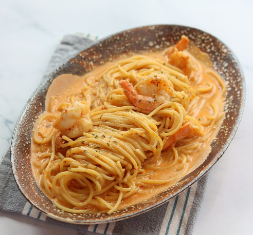

🍝로제파스타 레시피

🛒준비물
- 🌾파스타면 1인분
- 🫒올리브오일
- 🧄다진마늘
- 🧂소금, 후추, 고춧가루
- 🥛우유 200ml
- 🦐칵테일 새우
- 🧈버터
✨조리 방법
- 적당히 달군 팬에 버터와 다진마늘을 약한 불에 오래 볶는다.
- 마늘이 노릇해지면 손질해둔 칵테일 새우와 함께 볶는다.
- 재료들을 팬의 한 쪽으로 몰아놓고, 다른 한 쪽에서 올리브유와 고춧가루로 고추기름을 낸다.
- 고추기름이 충분히 우러나면, 재료가 타기 전에 우유 한 컵을 붓고 강불로 끓인다.
- 끓는 물에 면을 삶는다.(면의 종류에 따라 시간은 차이가 있을 수 있다.)
- 미리 만들어 둔 소스가 끓으면 삶은 면을 넣고 같이 조금 더 끓여준다.
- 취향에 맞게 간을 한 뒤 그릇에 옮겨담으면 끝!
📹참고 영상